Remasterem tempo real.
O WLSS roda por cima da tela e aplica cores vivas, restauração de anime, clima, aura, mármore, cromo e mais de 300 presets — direto na sua placa de vídeo. Sem mods e sem mexer em arquivo do jogo.
7 dias de garantia · teste grátis antes de comprar · R$ 39,90 pagamento único
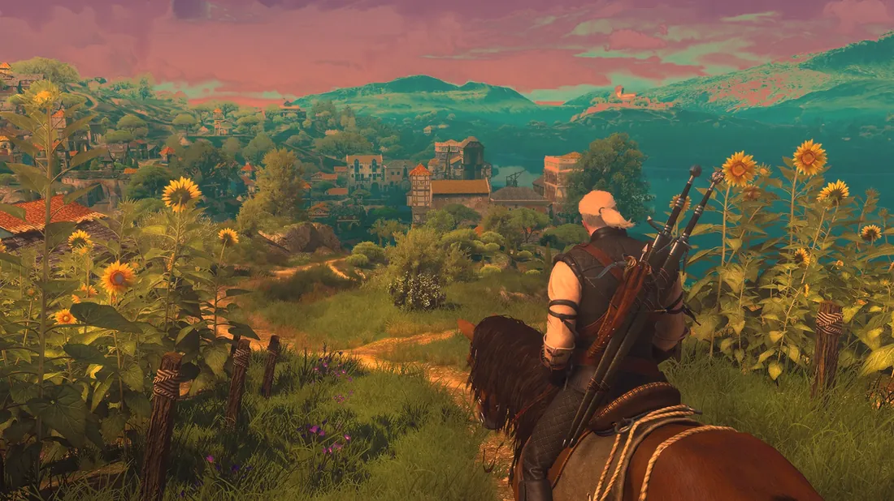
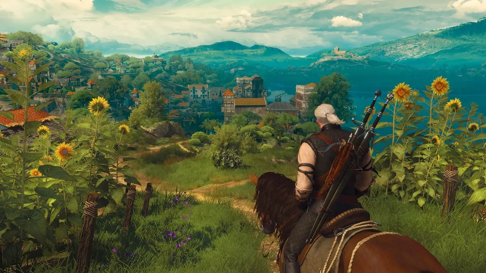
ORIGINALCOM WLSS↔ Arraste a linha para comparar o original com o WLSS
O que o WLSS faz por você
Pare de ver o mesmo visual de sempre. Um painel só com tudo para transformar a imagem.
Tempo real na GPU
Camada transparente por cima de qualquer janela. F9 liga e desliga, F8 salva a captura. O app mostra o custo de cada quadro.
Restaurar anime antigo
Limpa ruído e compressão, afia o traço e restaura as cores. Remove as linhas do desenho se você quiser redesenhar.
Mundo: estação e clima
Outono, inverno com neve, pôr do sol, noite com estrelas e lua, névoa, chuva e neve caindo.
Personagem com IA
Recorta o personagem para trocar o fundo, criar aura de fogo ou elétrica, desintegrar em poeira, virar mármore ou cromo.
Arte e beleza
Sketch de estúdio, cartoon 3D, pop art Warhol, rotoscópio, pele limpa (retoque) e melhorar imagem com dehaze.
Exportar vídeo filtrado
Aplique o filtro em um vídeo baixado e receba o MP4 pronto, com o áudio original — sem gravar a tela.
Laplaciano: linhas e contornos
O motor de linhas do WLSS: transforma a imagem em anime, HQ ou vetor, em até 3 camadas. Ver como funciona →
Presets e importação
Importe .json, .xmp do Lightroom e LUTs .cube. Seus presets salvos ficam protegidos nas atualizações.
Melhore animes e desenhos antigos com IA
Aquele anime da infância cheio de ruído, borrado e com cor apagada ganha traço nítido, cor viva e mais resolução. Em tempo real, direto no player.
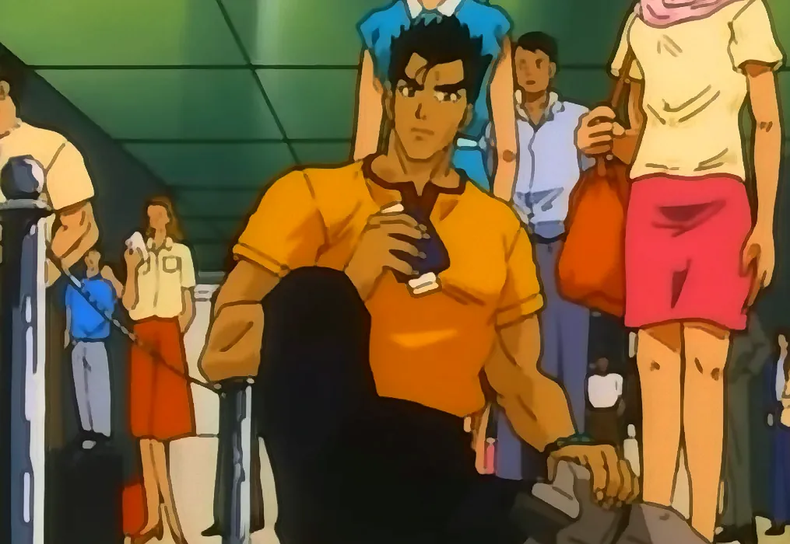
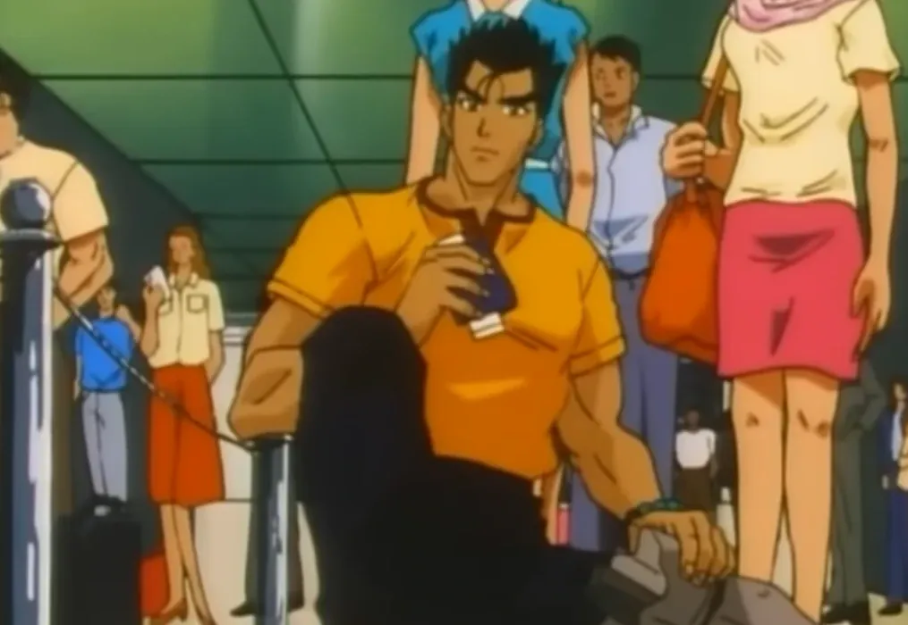
ORIGINALCOM WLSS↔ Arraste a linha: o anime antigo e o restaurado pelo WLSS

▶ Veja funcionando (com som)
Cell shading em tempo real no seu jogo
O preset LAP 1 aplicado por cima de um gameplay, sem editar o vídeo. Arraste a linha para comparar o original com o WLSS.
Gameplay de Mortal Kombat 1 (canal MKIceAndFire, YouTube), usado só para demonstrar o filtro.
Laplaciano: transforme tudo em desenho
O Laplaciano é o motor de linhas do WLSS. Ele encontra as bordas da imagem e as redesenha como traço — contorno de anime, quadrinho, vetor ou ilustração — em tempo real, por cima de qualquer jogo ou vídeo.
Até 3 camadas independentes
Cada camada tem a sua força, espessura e cor. Elas ficam sempre por cima dos outros efeitos e nunca se atrapalham.
A cor que você quiser
Linha preta, na cor da imagem, ou tom sobre tom: escura em fundo claro e clara em fundo escuro.
Espessura e acabamento
Engrossar, suavizar por regiões (sem poros e pontinhos), limpar sujeira e escolher a mescla como no Photoshop.
Sombras novas projetadas pelas linhas
As próprias linhas projetam sombra onde a imagem não tinha: escolha direção, comprimento e penumbra.
Laplaciano IA
Reforça o contorno do personagem usando o recorte de IA, e ainda preenche sombras geométricas estilo HQ.
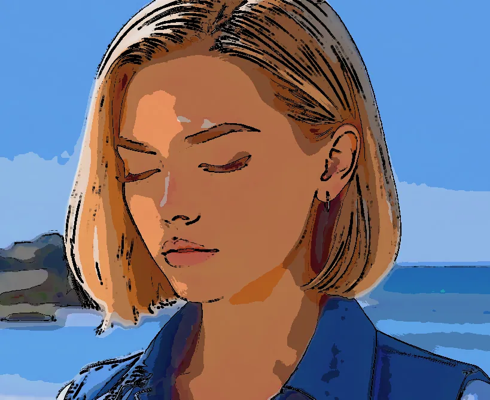
ORIGINALCOM WLSS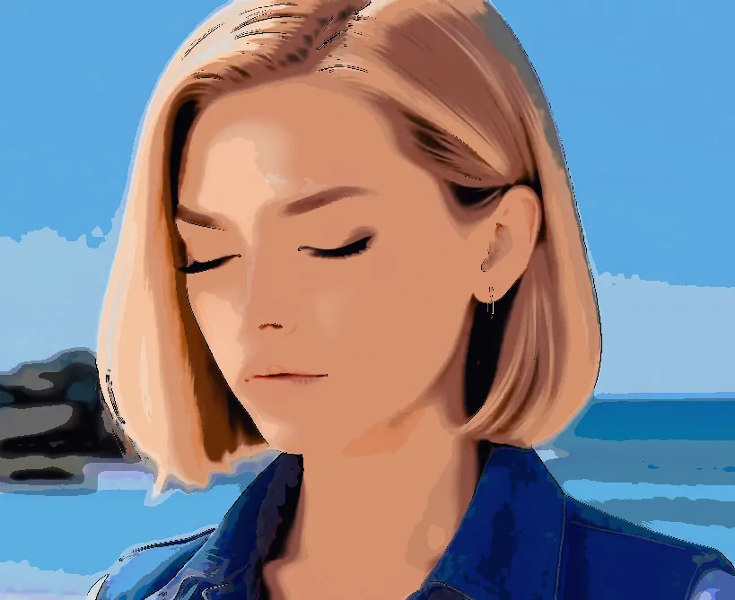
ORIGINALCOM WLSS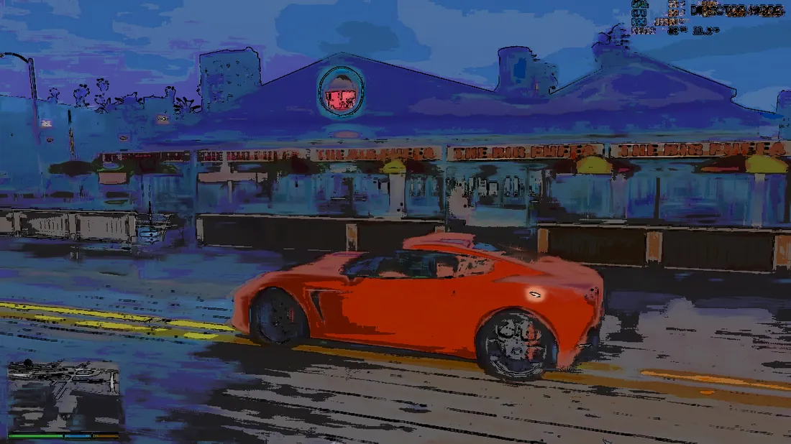
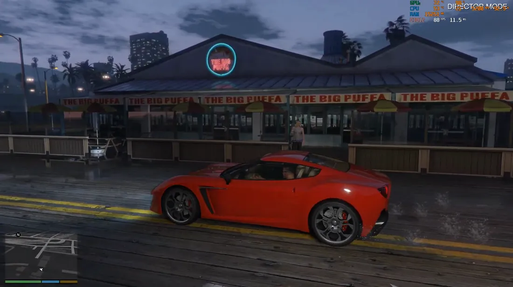
ORIGINALCOM WLSS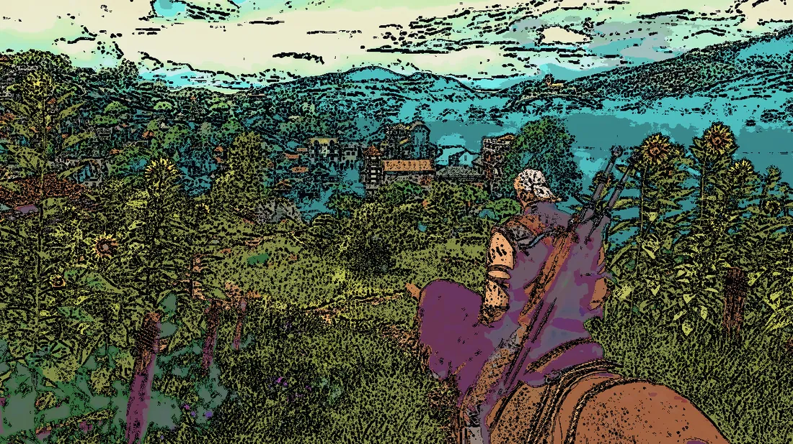
ORIGINALCOM WLSS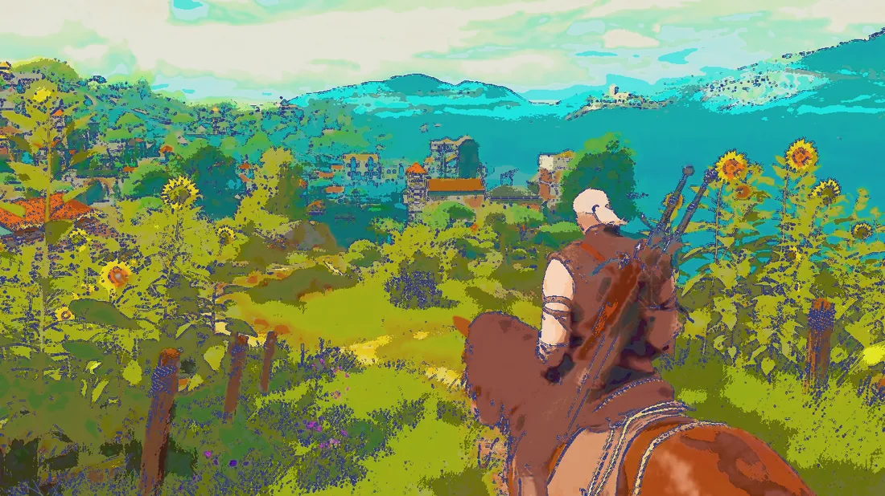
ORIGINALCOM WLSS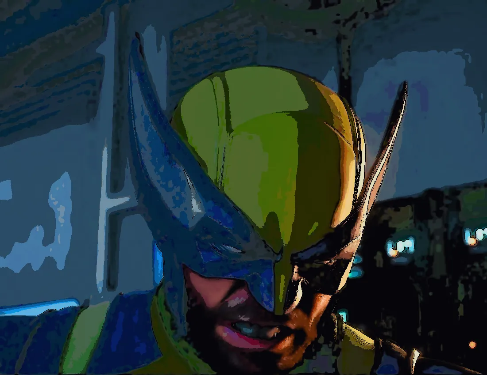
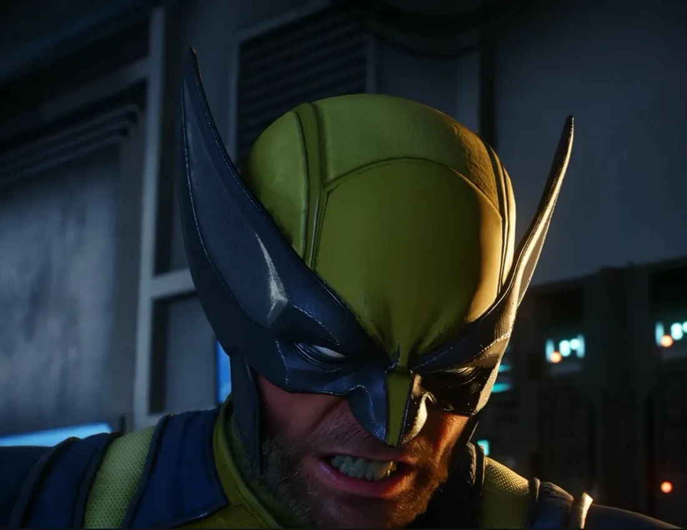
ORIGINALCOM WLSS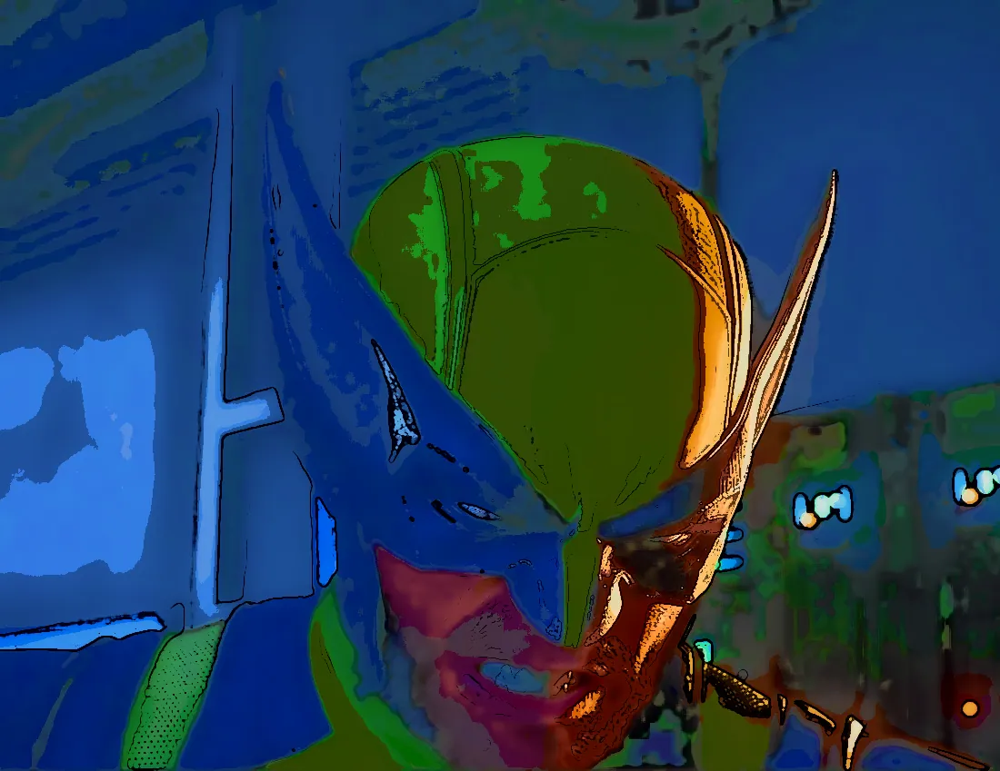
ORIGINALCOM WLSSFeito para quem quer mais
Quem joga
Dê um visual novo ao seu jogo favorito: cinema, anime, cyberpunk ou realista, sem instalar mod nenhum.
Quem edita vídeo
Aplique looks e efeitos em um vídeo e exporte pronto, com o áudio original e na resolução que quiser.
Quem ama anime
Restaure animes antigos: traço nítido, cor viva e sem a sujeira da compressão. Direto no player.
Como funciona
Abra o jogo ou vídeo
Janela, sem bordas, emulador ou player. O WLSS captura a imagem direto da GPU — nada é injetado.
Escolha um preset
Mais de 300 presets prontos ou monte o seu com 750+ controles. A IA também analisa a tela e sugere.
Aperte F9 e jogue
O filtro liga por cima da tela. F9 liga/desliga e F8 salva uma captura do resultado.
Baixou um vídeo? Entregue pronto.
Escolha o vídeo, o filtro e a resolução (até 8K). O WLSS processa quadro a quadro e salva o MP4 final com o áudio original — sem gravar a tela e sem perder qualidade.
- Mesma qualidade do tempo real, aplicada em cada quadro
- Saída em 1080p, 1440p, 4K ou até 8K
- Teste rápido de 10 segundos antes de exportar tudo
Exemplo: cena de anime antigo restaurada e ampliada
| Gravar a tela | Exportar com WLSS | |
|---|---|---|
| Resolução | A da tela, com perda | A que você escolher, até 8K |
| Qualidade do filtro | Comprimida pela gravação | Aplicada quadro a quadro |
| Áudio | Regravado | O original, sem perda |
| Trabalho | Assistir enquanto grava | Escolher e deixar processando |
Veja o WLSS funcionando de verdade
Sem edição e sem truque: o filtro rodando em tempo real. Aperte o play.

Leve o WLSS hoje
Um pagamento, para sempre. Baixe o teste grátis e decida com tudo liberado.
pagamento único · licença vitalícia · 1 computador
- Todos os efeitos: Mundo, Extras, Arte e Beleza, Restaurar Anime
- 300+ presets prontos e 750+ controles
- Exportar vídeo filtrado até 8K
- Atualizações da versão maior inclusas
- Seus presets salvos ficam protegidos nas atualizações
- Chave entregue na hora, no PIX ou no cartão
- Suporte direto pelo WhatsApp
PIX: chave na hora · Cartão: à vista, também na hora
ou baixe o teste grátis — todos os efeitos, com marca d'água
Garantia de 7 dias. Se o WLSS não for o que você esperava, devolvemos o seu dinheiro. Sem burocracia.
Willian Ludgero
Criador do Tattoo AI Master e do WLSS. Desenvolve ferramentas de IA e de imagem e dá suporte direto a quem compra.
Perguntas frequentes
Funciona em qualquer jogo?
O WLSS roda como uma camada transparente por cima da tela, capturando a imagem pelo Windows Graphics Capture. Funciona em jogos em janela ou sem bordas, emuladores, players de vídeo e navegador. Em jogos de tela cheia exclusiva, use o modo sem bordas.
Posso ser banido por usar?
O WLSS não injeta nada no jogo nem altera arquivos dele: é só uma camada visual por cima da tela. Mesmo assim, em jogos online competitivos com anti-cheat (Valorant, CS2, Fortnite etc.) a recomendação é não usar.
Quanto de desempenho eu perco?
Depende dos efeitos que você liga: tudo roda na sua placa de vídeo e o app mostra, em tempo real, quantos milissegundos cada quadro está custando. Efeitos leves (cor, nitidez) custam pouco; os de IA são mais pesados e é para isso que a RTX é recomendada.
Quais os requisitos?
Windows 10 ou 11 e uma placa de vídeo com DirectX 11. Placa NVIDIA RTX é recomendada para os efeitos de IA (recorte do personagem, luz neural).
É assinatura?
Não. É pagamento único de R$ 39,90, sem mensalidade. A licença é conferida online: o app renova sozinho quando você o abre com internet e, se ficar offline, continua funcionando por até 14 dias sem precisar de internet.
Como recebo a chave?
Você paga no Mercado Pago (PIX ou cartão). Assim que o pagamento é aprovado, a chave WLSS-XXXX-XXXX-XXXX aparece na tela e também chega no seu e-mail. No app, abra a aba Licença, cole a chave e clique em Ativar. Perdeu a chave? Use a página Recuperar minha chave.
Dá para usar em vídeo baixado?
Sim, de dois jeitos: rodando por cima do player (tempo real) ou usando o Exportar vídeo, que aplica o filtro quadro a quadro e entrega o arquivo pronto, com o áudio original, sem gravar a tela e sem perder resolução (requer o ffmpeg instalado).
E se eu não gostar?
Você tem 7 dias de garantia (direito de arrependimento): se não gostar, devolvemos o seu dinheiro e a chave é cancelada. E antes de comprar dá para testar de graça: todos os efeitos vêm liberados, só com uma marca d'água.
Posso usar em mais de um computador?
Não: cada chave vale para 1 computador. Se você trocar de PC (ou formatar), fale com o suporte pelo WhatsApp que liberamos a chave para o novo computador.
Apareceu um aviso do Windows ao abrir. É normal?
Pode aparecer a tela azul "O Windows protegeu o seu PC" (SmartScreen), porque o programa é novo e ainda não tem muitos downloads. Clique em Mais informações e depois em Executar assim mesmo. O arquivo baixado tem uma impressão digital (SHA-256) na página de download para você conferir.
Perdi a chave. E agora?
Use a página Recuperar minha chave: informe o e-mail da compra e reenviamos. Se não chegar, chame o suporte no WhatsApp.
Pronto para ver seu jogo como nunca viu?
Baixe o teste grátis agora ou garanta a licença vitalícia por R$ 39,90.